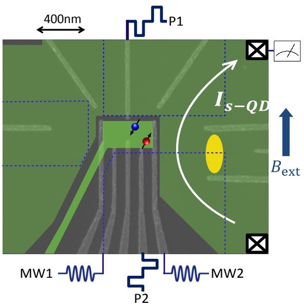
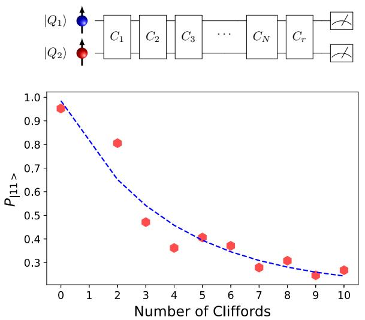
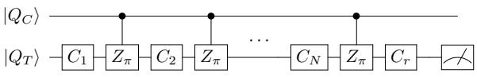

为什么需要 RB
单比特门与两比特门的误差率是判断一个平台能否跨越容错阈值的核心指标，但直接测保真度有两个障碍：其一，量子过程层析需要的测量设置数随比特数指数增长；其二，低误差率门（ 量级以下）的门误差会被态制备与读出误差（单发读出的误判率）淹没。RB 的对策是用随机 Clifford 门做 twirling（旋洗）：对任意噪声信道取 Clifford 群平均后，等效噪声必然是去极化信道，于是测量结果只依赖一个标量参数——去极化参数 ，SPAM 误差只进入拟合常数项，可被干净地分离。
标准 RB：衰减曲线与保真度提取
标准 RB 的流程：初态取 （两比特情形为 ），施加 个随机 Clifford 操作，再补一个理想情况下能把系统转回初态的恢复 Clifford，最后测量回到初态的概率 。在很宽的假设下 随 单指数衰减：
其中 是 Clifford 操作数目； 是去极化参数，只由门误差决定，是 RB 真正要测的量； 和 是拟合常数，吸收了态制备与测量（SPAM）误差——这正是 RB 对 SPAM 免疫的来源。平均 Clifford 保真度由 直接给出：
其中 是希尔伯特空间维度、 是被测比特数。 时 ； 时 。
三个关键变体
交错 RB（interleaved RB）：把待测门 插进参考随机 Clifford 序列的每一步，比较交错序列与参考序列的衰减率，即可单独提取该门的保真度：
其中 、 分别是交错与参考序列的去极化参数。注意这个估计只对严格的去极化噪声精确；对失相或校准误差类噪声，它只给出上下界，且界宽随参考门误差按 放大——参考序列保真度越高，交错 RB 越可靠。
同时 RB（simultaneous RB）：对比”单独跑 A 比特 RB”与”B 比特同时也在跑随机 Clifford”两种情形的 ，差值量化操控串扰。记 为比特 在对比特 做 twirling 时的去极化参数。
特征 RB（character RB，CRB）：传统 RB 必须用多比特 Clifford 群，而编译一个两比特 Clifford 平均需要 8.25 个单比特旋转加 1.5 个 CPhase 门，序列长导致衰减太快、对相干时间要求苛刻，交错估计的界也很松。CRB 允许用任意有限群做基准：选一个高保真的基准群（这里取并行单比特 Clifford 群 ），再在每条序列前插入一个来自特征群（两比特 Pauli 群）的随机门，按表示论的特征函数加权平均后，各衰减通道仍可拟合成干净的单指数，同时保留 SPAM 免疫。
Si/SiGe 双比特器件的完整基准（Xue et al. 2019）

器件结构：Si/SiGe 异质结中静电定义的双量子点，量子阱厚 12 nm、距半导体表面 37 nm；两个电子自旋比特经交换相互作用耦合，微波与栅压脉冲经虚拟栅极寻址。图源：Xue et al. (2019), Fig. 1。
这台天然硅（非同位素纯化）Si/SiGe 器件用标准 RB、同时 RB 与 CRB 完成了当时半导体比特最完整的门保真度表征。单比特：Q1 平均单比特门保真度 、Q2 为 。串扰：另一比特同时做随机 Clifford 时，Q1 的 Clifford 保真度降 0.8% 至 ，Q2 降 3.5% 至 ——两比特频率差 1.38 GHz 远大于 2 MHz 的 Rabi 频率，排除了频率寻址受限的机制，指向量子点微观结构的贡献。
两比特 Clifford RB：从两比特 Clifford 群（11520 个元素）采样做标准 RB：

两比特 Clifford 随机基准：从初态 |11⟩ 出发、σ_z⊗σ_z 基测量得到 11 的概率随两比特 Clifford 门数 m 的衰减；每点 30 条随机序列、各重复 100 次，虚线为单指数拟合。编译开销（每个两比特 Clifford 平均 8.25 个单比特门 + 1.5 个 CPhase）使衰减在约 8 个 Clifford 内即饱和，提取的平均两比特 Clifford 保真度为 82.10±2.75%，不确定度大。图源：Xue et al. (2019), Fig. 3。
编译开销使标准两比特 RB 在约 8 个 Clifford 内就饱和，只能给出 的粗略值。先退一步用简化的交错 RB 把 CPhase 投影到单比特子空间（控制比特为 时目标比特等效经历 旋转、为 时等效恒等），得到投影保真度 91%–95%：

CPhase 门投影到单比特空间的交错 RB：对四种控制比特/本征态组合，把 CPhase 交错进单比特 Clifford 参考序列后回退概率的衰减，提取的投影保真度为 90.79%–95.50%。这是完整两比特保真度的下界式替代量。图源：Xue et al. (2019), Fig. 5。
CRB 提取真实 CPhase 保真度：CRB 的同时 RB 型衰减覆盖三个子空间（、、），对应三个去极化参数 、 与两比特宇称通道 ；若两比特误差无关联，则 。按子空间维度加权得到平均去极化参数与 CRB 参考保真度：
权重 、、 正比于两比特密度矩阵 16 维空间中三个子空间各自的维数。参考 CRB 拟合得 、、，参考保真度 ；把 CPhase 交错进 CRB 序列后用交错公式提取，得两比特空间中的 CPhase 门保真度 。 与零一致，说明两比特误差基本无关联。作为对照，若用标准两比特交错 RB（参考保真度仅 82%），最坏情形界只能保证交错门保真度落在 ；CRB 的短参考序列把该界收紧到 。
误差来源与改进路径
该器件 CPhase 的主导误差是天然硅中丰度 4.7% 的 ^29Si 核自旋经超精细相互作用引起的退相干，以及电荷噪声对两电子波函数交叠（即交换相互作用强度 ）的调制——器件无法进入 对失谐一阶不敏感的对称点，电荷噪声直接一阶作用于耦合强度。作者据此给出改进路线：同位素纯化 ^28Si/SiGe 衬底 + 在对称点执行交换型 CPhase 门，有望把 CPhase 保真度推过容错阈值（>99%）。同组后续工作（Watson et al. (2018) 的器件前身与Xue et al. (2022) 的六比特处理器）沿这条路把单/两比特保真度推进到 99.9%/99.65% 量级，验证了这套基准方法给出的误差诊断。
与其他概念的关系
- 单比特门与两比特门：RB 家族是这两类词条中所有保真度数字的标准来源；
- 交换型两比特门：交错/CRB 版本专门用于提取 CPhase 等交换门的保真度；
- 读出串扰：同时 RB 量化的是操控串扰，与读出串扰互补，二者共同构成多比特系统的干扰图谱；
- Xue et al. (2022)：同一方法学在六比特处理器上的延伸（GST 与系统串扰表征）。
- 自旋退相干：RB/GST 的理论底座是马尔可夫近似，而 1/f 电荷噪声是非马尔可夫的——GST 误差生成元的相干/非相干分解是量化这一模型违反、避免保真度低估的现成工具（见该词条”非马尔可夫 1/f 噪声的随机模型”一节）。
参考文献
- X. Xue, T. F. Watson, J. Helsen, D. R. Ward, D. E. Savage, M. G. Lagally, S. N. Coppersmith, M. A. Eriksson, S. Wehner, L. M. Vandersypen. Benchmarking Gate Fidelities in a Si/SiGe Two-Qubit Device. Physical Review X 9, 021011 (2019). DOI: 10.1103/PhysRevX.9.021011；arXiv:1811.04002（QAtlas 缓存：1811.04002）。
完整文献库（含各篇站内全文页）见 参考文献库。